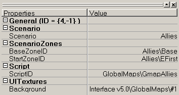
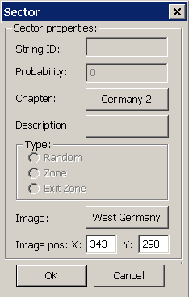
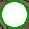
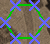
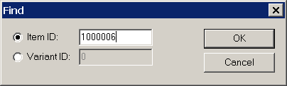

В S3 механизм, обеспечивающий продвижение по сценарию, реализован с использованием функций скриптового языка. Они обеспечивают открытие миссий для игрока, завершение миссий, переход от одного блока миссий к другому и т.п.
Для создания полноценного сценария следует создать структуру, которая включает в себя все составляющие сценария.
При встраивании собственной миссии в уже существующую сценарную игру большая часть сценарной структуры уже существует и поэтому остается только указать место новой миссии в этой структуре.
В текущей версии игры скрипт, обеспечивающий продвижение по сюжету, запускается на базе, на которую герой попадает после выполнения вводной миссии. При создании самостоятельного сценария рекомендуется детально ознакомиться с этим скриптом. Наличие зоны аналогичной базе облегчает создание механизма продвижения по сюжету. В принципе возможен перенос функциональности базы внутрь сюжетных миссий. Для этого полезно воспользоваться следующими скриптовыми функциями:
CheckScenarioBlockJustComplete ( nBlockOrder )
CompleteAllBlocksBefore ( BlockOrder )
GetNextBlockOrder
IsMissionTaken
IsReadyForNextBlock
IsScenarioBlockCompleteNumAvailableMissions()
NumMissionInBlock
ScenarioAddVisibleZone ( zoneName )
TakeMission ()
Сценарные ресурсы
Scenario — сценарий. Он служит вершиной иерархии, которая содержит все необходимое для организации набора миссий в сюжет, содержит ссылку на название, описание и список сценарных блоков.
При вызове этой ссылки список сценарных блоков выводится в отдельном окне редактора.
Сценарные блоки – это набор из нескольких миссий, из которых определенное количество должно быть выполнено, прежде чем игрок получит доступ к миссиям следующего блока. В пределах одного блока миссии могут выполняться в любом порядке. Для того чтобы создать более линейный сценарий – цепочку миссий – нужно создать набор блоков, содержащих одну миссию.
Для создания нового блока в списке воспользуйтесь пунктом New Item контекстного меню.
Опиание блока состоит из номера блока, который определяет положение блока в цепочке, количества миссий, которые нужно выполнить для того чтобы завершить блок, и ссылки на список миссий,составляющих этот блок. При вызове этой ссылки список миссий блока открывается в отдельном окне редактора.
Сценарные миссии - это игровые зоны с установленными для них параметрами, которые позволяют использовать эти карты в качестве части сценария.
Параметры отображаются при выборе миссии в списке.
JournalRecordID |
Ссылка на запись в журнале героя, которая выведется по окончании миссии |
SmallDescription |
Код миссии, для обращения к ней из консоли и скриптов. |
Description |
Трава |
Item Slots |
Не используется |
Person Slots |
Не используется |
CluesMaxNumber |
Не используется |
TimeOfday |
Время суток на зоне |
ReparationForCivs |
Размер штрафа за гибель одного гражданского лица на этой зоне. |
Reward |
Размер денежного вознаграждения за выполнение основного задания. |
MobsLevel |
Уровень врагов |
CanPKBeUsed |
Можно ли использовать на зоне бронекостюмы. |
Goals |
Ссылка на список заданий на зоне. |
Templates |
Ссылки на максимум три подзоны |
Scenario |
Ссылка на сценарий, которому принадлежит эта зона (должна указывать на сценарий AddOn \ Main ) |
N а me |
Ссылка на внутриигровое название зоны |
ZoneDescriptionID |
Ссылка на подробное описание зоны |
PWLImageID |
Ссылка на изображение, которое будет показываться при загрузке зоны. |
PhotoID |
Ссылка на изображение зоны на экране выбора миссии |
Для создания новой миссии блока в списке миссий воспользуйтесь пунктом New Item контекстного меню.
При щелчке по ссылке, ведущей в список заданий, список откроется в отдельном окне редактора.
Задания – цели, которые должны быть достигнуты игроком во время миссии для ее успешного выполнения
Параметры заданий отображаются при выборе задания в списке
JournalRecordID |
Ссылка на запись в журнале героя, которая выведется по выполнению задания миссии |
BlocksLeaveZone |
Необходимо ли выполнение данного задания для завершения миссии. |
CompleteImmediately |
Засчитывается ли задание немедленно или только по выходе с зоны. |
VisibleByDefault |
Отображается ли задание сразу по приходе на миссию(в противном случае должно показываться с использованием скрипта). |
SmallDescription |
Не используется |
GoalType |
Conclision – задается скриптом, Item – действие с предметом, Person - действие с персонажем, Object – действие с неподбираемым объектом на зоне |
Reward |
Дополнительное денежное вознаграждение за выполнение данного задания в дополнение к вознаграждению за миссию. |
Tasks |
Ссылки на максимум шесть подзаданий |
Reward |
Размер денежного вознаграждения за выполнение основного задания. |
PersID |
Персонаж, с которым нужно совершить действие для выполнения задания |
ObjectID |
Неподнимаемый объект, с которым нужно совершить действие для выполнения задания |
GoaName |
Ссылка на формулировку задания. |
ItemID |
Предмет, с которым нужно совершить действие для выполнения задания |
Для выполнения задания некоторое действие должно быть совершено с персонажем, предметом или стационарным объектом на зоне. Выбор между ними производится параметром GoalType, а затем используются поля PersID, ItemID и ObjectID соответственно.
Действия, которые необходимо совершить, определяются подзаданиями.
Если условия выполнения задания не подходят под вышеописанные, то параметру GoalType присваивается значение Conclusion, а тип подзадания устанавливается в Complete By Script .
Для создания нового задания для миссии в списке заданий воспользуйтесь пунктом New Item контекстного меню.
При щелчке на поле с названием подзадания в отдельном окне редактора появится список подзаданий.
Подзадания – это последовательность действий, которые должны быть совершены игроком для успешного выполнения задания. В ыполнение последнего подзадания означает выполнение всего задания. Каждое подзадание имеет 2 параметра: тип выполнения ( Tag ) и текстовое описание ( Description ). Тип выполнения можно выбрать из выпадающего списка:
Carry out item |
Вынести из зоны указанный предмет |
Carry out person |
Вынести на себе из зоны указанного персонажа |
Complete by script |
Задание/подзадание завершается по скрипту |
Defend object |
Предотвратить уничтожение указанного объекта |
Destroy item carrier |
Уничтожить персонажа, владеющего предметом |
Destroy object |
Уничтожить указанный объект |
Find item |
Найти (увидеть) указанный предмет |
Find person |
Найти (увидеть) указанного персонажа |
Kill person |
Уничтожить указанного персонажа |
Stun person |
Привести персонажа в бессознательное состояние |
Take item |
Взять предмет |
Take person |
Поднять тело персонажа |
Текстовые строки, относящиеся к подзаданиям, размещаются в текстовых ресурсах.
Для создания нового подзадания в списке подзаданий воспользуйтесь пунктом New Item контекстного меню.
Выдача заданий (Goals) и подзаданий (Task)
Если для миссии создана описаная выше структура заданий и подзаданий, то они автоматически будут отображаться во время миссии в соответствии с заданными параметрами.
Выдавать задания в миссии можно также с помощью скриптов. Чтобы можно было засчитывать выполнение задания из скрипта, у задания на закладке Tasks в поле Tag необходимо выставить параметр Complete by script . Для этого служат следующие скриптовые функции:
ScenarioSetGoalComplete ( nGoalID, bComplete [ true ])
ScenarioSetTaskComplete(nGoalID, iTask, bComplete[true])
Включение миссии в сценарий
Прежде всего для включения миссии в сценарий необходимо внести ее в состав одного из уже заданных блоков сценария.
Также необходимо предоставить игроку интерфейс для навигации по доступным участкам сценария. Для этой цели используется глобальная карта и карта региона. Любая миссия должна быть привязана к этим двум картам.
Глобальная карта (GlobalMaps)
 В игре есть единственная глобальная карта, на которой происходят все действия. В принципе, рисунок карты можно заменить, но логику ее использования переопределить нельзя.
Глобальная карта имеет следующие свойства:
Scenario — принадлежность тому или иному сценарию.
BaseZoneID — ссылка на зону, которая будет служить базой.
StartZoneID — вводная миссия в сценарий
ScriptID — скрипт,  активирующийся при загрузке глобальной кары
активирующийся при загрузке глобальной кары
Background — ссылка на текстуру фона
 Активные места на карте отмечены цветными многоугольниками, каждой фигуре соответствует своя карта региона. Эта фигура называется сектором. Крестиками на секторе отмечены узлы, за которые можно передвигать части фигуры, придавая ей нужную форму (фигура определяет координаты курсора мыши, вызывающего переход к карте региона при нажатии левой кнопки).
Чтобы вывести окно свойств сектора, щелкните правой кнопкой мыши по его границе (обратите внимание, что щелчок по внутренней части сектора не даст эффекта).
Chapter — принадлежность тому или иному региону (стране).
Image — картинка региона (вам нужно будет создать свою, если станете вносить новый регион на глобальную карту).
Image pos — координаты вывода картинки на экране
Остальные параметры в этом окне неактивны, т.к. они используются в свойствах зон на карте региона.
Разделы ( Chapters )
Разделы сценария, расположенные в закладке Chapters, представляют собой карты некоторых регионов, доступных с глобальной карты, на которых территориально расположены игровые зоны.
Описание карты региона включает в себя набор параметров:
список зон, которые будут отображаться в качестве походного лагеря, если команда игрока решит устроить привал;
ссылка на скрипт, который будет выполняться при заходе на эту карту;
ссылка на изображение, которое служит фоном для этой карты.
Определим тип и положение нашей игровой зоны на карте региона. Правым щелчком мыши в основном окне редактора выбираем New sector из контекстного меню. Как и на глобальной карте, область, которая отображает зону следующего уровня, называется сектором.
Далее в контекстном меню, которое выводится щелчком правой кнопкой мыши по кромке созданного сектора, нужно выбрать пункт Zone и задать соответствующую этому сектору сценарную зону (значение параметра SmallDescription миссии).
Параметр Probability определяет вероятность появления данной миссии на карте региона, число обычно находится в пределах от 1 до 100 и имеет смысл только для случайных стычек. Если это значение равно 0, то миссия постоянно присутствует на карте (как все сценарные миссии). Сценарные миссии начинают отображаться на карте региона, как только мы получаем улику, ведущую на эту зону. Вид иконки игровой зоны определяется программной логикой.
 |
Так выглядит на карте региона сценарная зона. В игре на этом месте будет отображена иконка доступной зоны, если зона открыта, иконка пройденной зоны, если задание выполнено, и пустое место, если про зону пока не известно. |
 |
Так выглядит зона случайных стычек ( random encountes ). В игре на этом месте будет появляться иконка противника пропорционально вероятности, заданной в поле Probability . |
Отладка сценария
Все ошибки могут происходить и на этапе проектирования сценария и при вводе связей из-за выбора неверных ссылок в редакторе.
Проверка игровых зон
Убедившись в правильности сценария, следует проверить все игровые зоны (т.е. темплейты) на работоспособность и соответствие намеченному сценарию. Предполагается, что вы собираете сценарий из готовых работающих темплейтов, поэтому проблем с загрузкой темплейта в редакторе у вас быть не должно. Загрузите по очереди все зоны, использованные в сценарии Templates . Приуспешной загрузке визуально проверьте правильность указанных темплейтов.
 Искать темплейты сценарных зон в редакторе по ID удобно с помощью функции поиска Ctrl + F ( Find ) или через контекстное меню, вызываемое по нажатию правой кнопки в активной ресурсной закладке. В диалоговом окне Item ID — это ID темплейта, а Variant ID — это ID варианта данного темплейта.
Запустите темплейты сценарных зон в интерфейсе редактора с персонажами по умолчанию и убедитесь, что игровые зоны не содержат ошибок проходимости (см. раздел 3). После этого остается проверить работоспособность заданий.